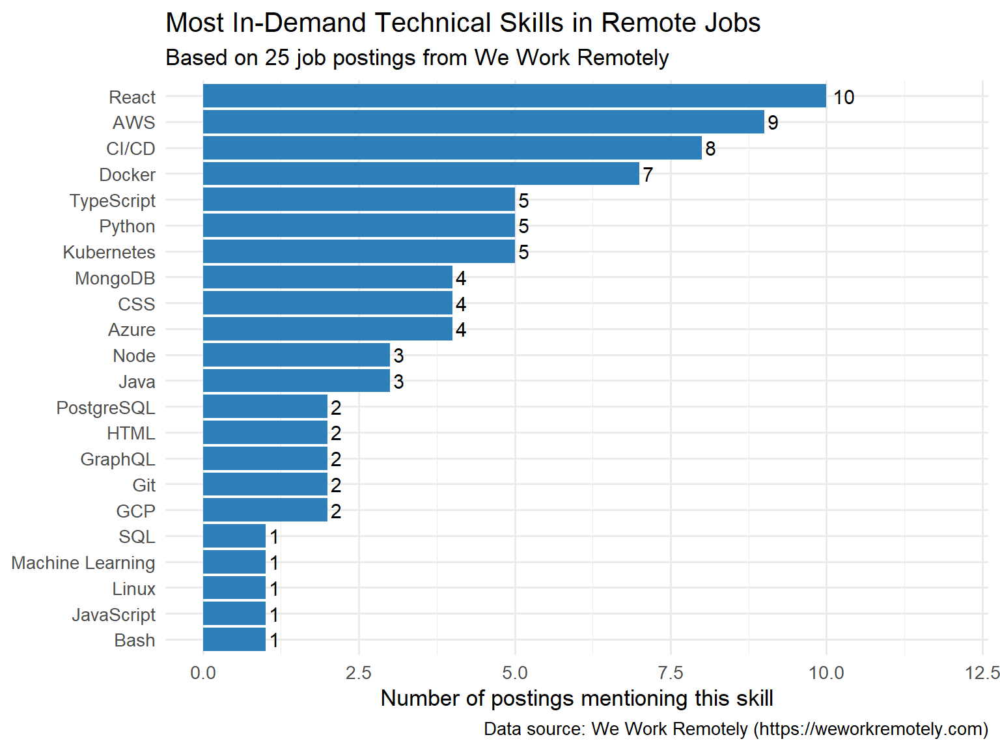

Weekly Blog 2: What Skills Do Remote Tech Employers Actually Want?
Author
Yuzhuo Cui
Published
September 14, 2026
Introduction
This post uses web scraping to collect 25 recent remote tech job postings from We Work Remotely and analyzes the full job descriptions to identify which technical skills appear most often.
The goal is not just to demonstrate scraping, but to answer a practical question: if you are preparing for a remote tech career, what should you learn first?
Data Collection
I used the rvest package in R to parse the public RSS feed from We Work Remotely’s programming jobs category.
Rows: 25
Columns: 5
$ title <chr> "Huzzle: Full-Stack Developer (Python, React, AI)", "Ci&t:…
$ region <chr> "Anywhere in the World", "Anywhere in the World", "Anywher…
$ category <chr> "Full-Stack Programming", "Full-Stack Programming", "Full-…
$ date <chr> "Tue, 18 Aug 2026 20:34:05 +0000", "Tue, 18 Aug 2026 20:34…
$ description <chr> "<p> <strong>Headquarters:</strong> Mexico </p> <h3>About …
Analysis
I defined a list of 30 common technical skills and counted how many job descriptions mention each one. I used word-boundary regex (\\b) to avoid false matches — for example, ensuring that “Java” does not match “JavaScript”, and that “AI” does not match “email”.
skill_counts |>mutate(skill =reorder(skill, n)) |>ggplot(aes(x = n, y = skill)) +geom_col(fill ="#2c7fb8") +geom_text(aes(label = n), hjust =-0.3, size =4) +labs(title ="Most In-Demand Technical Skills in Remote Jobs",subtitle ="Based on 25 job postings from We Work Remotely",x ="Number of postings mentioning this skill",y =NULL,caption ="Data source: We Work Remotely (https://weworkremotely.com)" ) +theme_minimal(base_size =13) +expand_limits(x =max(skill_counts$n) *1.2)

Most in-demand technical skills in remote tech jobs
Key Findings
1. Frontend frameworks lead the pack. React appears in 10 out of 25 postings (40%) — more than any other skill. This confirms that modern remote employers expect engineers to be comfortable building interactive user interfaces.
2. Cloud and DevOps skills are the new baseline. AWS (9), CI/CD (8), Docker (7), and Kubernetes (5) together appear in over 60% of postings. Cloud infrastructure and automated deployment are common expectations for remote engineers.
3. Data and database skills are expected, not optional. MongoDB (4), PostgreSQL (2), and SQL (1) appear frequently enough to confirm that remote engineers must be comfortable working with databases, even if they are not database specialists.
Actionable Recommendation
If you are preparing for a remote tech career, prioritize:
React — it appears in 40% of postings and is the single most requested skill.
AWS + Docker + CI/CD — this trio of cloud and DevOps skills appears across more than half of the postings.
Python — the most transferable language, useful for backend, data analysis, and machine learning roles.
Limitations
This analysis covers only 25 postings from a single RSS feed at one point in time. We Work Remotely is not representative of all remote work, and counting keywords in job descriptions is a rough proxy for skill demand.
Data Source
All data was collected from We Work Remotely. The RSS feed is publicly available and does not require authentication.